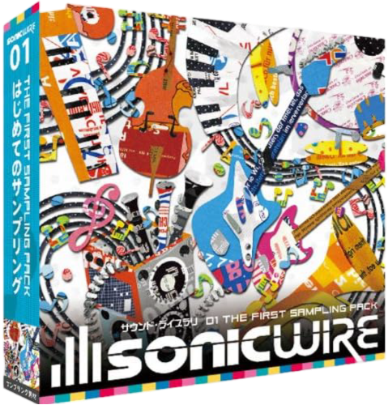
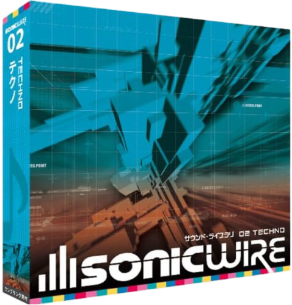
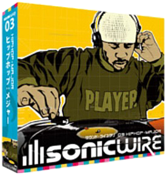
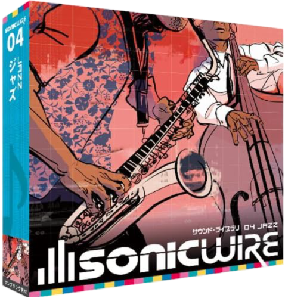
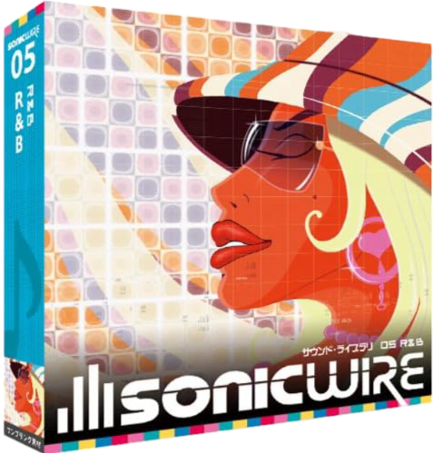
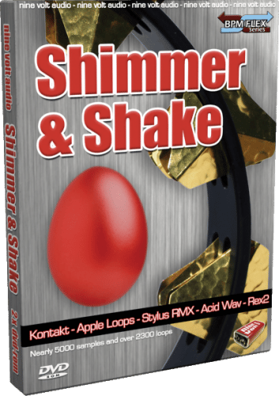
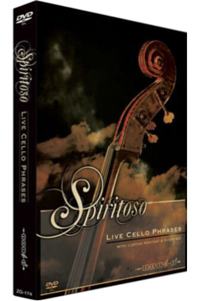
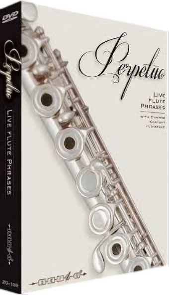

SONICWIRE01

¡Rock, baile étnico y efectos de sonido en un solo paquete!
Esta colección, ideal para iniciarse en la producción musical, está repleta de sonidos versátiles que abarcan una amplia gama de estilos y géneros. Encontrarás bandas de rock con guitarras eléctricas, bajos y baterías potentes, además de tonos country con guitarras acústicas, y ritmos techno/house creados con sintetizadores e instrumentos electrónicos. También incluye vibrantes sonidos de hip hop, R&B y dub, junto con instrumentos orquestales, folklóricos y una gran variedad de efectos de sonido, como disparos y voces.
Cada elemento ha sido cuidadosamente seleccionado para ofrecerte las herramientas necesarias para crear pistas únicas y dinámicas. Esta colección incluye fragmentos de títulos icónicos como CE30 ORCHESTRAL FLAVOURS, VINDA LOOPS, INTERFACE GUITAR, NU HOUSE, AKOUSTIK BASS HITZ, NY CUTZ y iFX VOL.3 JUEGOS. ¡Una caja de juguetes sonora que te inspirará desde el primer día!
DVD-ROM SONICWIRE01
Precio web $691.86 MXN (impuestos incluidos)
Belleza funcional construida con sonidos electrónicos: una colección esencial para los amantes del techno.
Esta selección captura la esencia futurista del género, con sonidos creados a partir de sintetizadores y cajas de ritmos que destacan por su precisión mecánica. Desde bombos potentes que marcan el compás, charles agudos y definidos, bajos sintetizados que retumban con fuerza, hasta efectos misteriosos y percusiones que añaden un carácter único, cada elemento está diseñado para transmitir la belleza de la funcionalidad sonora.
Además, como un valor añadido, incluye fascinantes efectos de sonido inspirados en videojuegos, perfectos para dar un toque distintivo a tus producciones. Esta colección reúne materiales de títulos destacados como TECHNO IDENTITY, 8 BIT STYLEZ y GROOVE SHADOWS, ofreciendo todo lo necesario para crear pistas de techno innovadoras y dinámicas. ¡La herramienta definitiva para explorar los límites de los sonidos electrónicos!
DVD-ROM SONICWIRE02 TECHNO
Precio web $691.86 MXN (impuestos incluidos)
SONICWIRE02 TECHNO

SONICWIRE03 HIP HOP MAYOR

Textura auténtica y scratches icónicos: una colección imprescindible de sonidos de hip hop.
Esta selección captura la esencia del hip hop con el característico crepitar de las agujas sobre discos y los scratches que definen el género. Incluye 10 elementos principales, como batería, bajo, guitarra, cuerdas, piano, sintetizador, percusión y coros, que se pueden combinar fácilmente para crear canciones completas. También ofrece sonidos individuales de batería (bombo, caja, charles, platillos, etc.), permitiéndote diseñar ritmos originales a tu gusto.
Además, incorpora scratches y efectos de sonido que puedes usar libremente, aportando autenticidad y creatividad a tus producciones. Extraído de títulos destacados como OFF THE HOOK, CUT'N IT UP 2, KONTROL FREAKS y HIP HOP HIGH, este es el paquete definitivo para quienes buscan capturar la esencia del hip hop clásico y moderno. ¡Una herramienta imprescindible para productores de cualquier nivel!
DVD-ROM SONICWIRE03 HIP HOP MAYOR
Precio web $691.86 MXN (impuestos incluidos)
Versátil y expresivo: una colección esencial de sonidos de jazz.
Esta selección captura la esencia del jazz, desde las impecables formaciones de trío con piano, bajo y batería, hasta arreglos que integran una rica variedad de instrumentos característicos del género. Incluye canciones acústicas en trío, piezas destacadas con guitarra, melodías brillantes con saxofón y trompeta, e incluso composiciones modernas que incorporan sintetizadores. También encontrarás estilos fusión con piano eléctrico y congas, junto con intensas interpretaciones de big bands, reflejando la diversidad y riqueza del jazz.
Con 10 variaciones de canciones que ofrecen desarrollos únicos, como solos instrumentales, esta colección es perfecta para construir composiciones auténticas y dinámicas. Basada en títulos aclamados como NU JAZZ CITY, JAZZ QUARTET y ELEMENTS TRADITIONAL JAZZ, esta es la herramienta definitiva para explorar las múltiples expresiones del jazz, desde lo suave hasta lo intenso. ¡Ideal para productores de cualquier nivel!
DVD-ROM SONICWIRE04 JAZZ
Precio web $691.86 MXN (impuestos incluidos)
SONICWIRE04 JAZZ

SONICWIRE05 R&B

Una colección de bandas sonoras de R&B tan glamurosas como sexys.
Esta selección está diseñada para capturar la esencia del R&B, protagonizada por una diva con una habilidad vocal excepcional. Incluye 10 variaciones que abarcan desde pistas brillantes con tonos chispeantes de una caja de música, melodías emotivas con coros femeninos deslumbrantes, canciones sensuales con susurros y suspiros, hasta apasionados arreglos con un toque flamenco. Cada pista está cuidadosamente dividida en elementos como batería, bajo, guitarra, piano, sintetizador, cuerdas y material vocal, lo que permite crear canciones completas simplemente combinándolos. Además, se incluyen sonidos individuales de percusión como bombos y cajas, ideales para añadir un toque personal y único a tus producciones.
Basada en títulos aclamados como DA NU RNB HIPHOP, DA NU RNB HIPHOP 2 y DA NU HIPHOP ERA, esta colección ofrece materiales magníficos y sensuales, perfectos para dar vida a tus pistas de R&B con estilo y creatividad. ¡El complemento ideal para cualquier productor!
DVD-ROM SONICWIRE05 R&B
Precio web $691.86 MXN (impuestos incluidos)
Percusión versátil y de alta capacidad: una colección imprescindible para productores creativos.
Esta biblioteca, SHIMMER & SHAKE de Nine Volt Audio, reúne 25 tipos de percusión de mano en una impresionante colección de 8,12 GB. Desde clásicos como maracas y panderetas hasta opciones únicas como tambores para dedos, palos de lluvia, cascabeles, botellas de plástico con medicamentos, latas de cerveza y panderetas de latón, esta selección ofrece una amplia variedad para enriquecer cualquier producción musical. El parche para Kontakt incluye herramientas avanzadas para ajustar el ataque y la tensión del ritmo, permitiendo crear patrones rítmicos precisos y perfectamente sincronizados. Además de ritmos estándar en 4/4, esta colección abarca bucles en compases poco convencionales como 3/4, 5/4 y 7/8, ampliando tus posibilidades creativas.
Ideal para cualquier género, esta es una biblioteca de percusión de alta calidad que combina diversidad y funcionalidad. SHIMMER & SHAKE es perfecta para dar vida a tus producciones con texturas rítmicas únicas. (Este producto se entrega en DVD-R debido a su edición limitada).
Juego de 2 discos DVD-ROM SHIMMER & SHAKE
Precio web $1803.11 MXN (impuestos incluidos)
SHIMMER & SHAKE

SPIRITOSO LIVE CELLO PHRASES

Arpegios y acordes de violonchelo: una biblioteca versátil para compositores exigentes.
SPIRITOSO LIVE CELLO PHRASES ofrece una extensa colección de frases de violonchelo grabadas por un talentoso miembro de la Orquesta Filarmónica Real de Liverpool. Esta biblioteca, optimizada para KONTAKT4, se especializa en arpegios, incrementos en tiempos de 8 y 16 compases, y otras variaciones, brindando un recurso valioso para compositores y productores. Entre sus características destacadas, permite ajustar el número de violonchelistas en las interpretaciones, desde un solista hasta un conjunto de 12 músicos, y configurar patrones de arpegio como Maj7, Dim y Sus4. También ofrece opciones para personalizar la configuración de micrófonos, adaptándose a cualquier necesidad de producción.
Además de sonidos clásicos de violonchelo, incluye opciones transformadas que simulan sintetizadores, incorporando detalles únicos como filtros sensibles a la dinámica, desde pianissimo hasta fortissimo. Ideal para crear ensambles de arpegios con un nivel de realismo y control excepcional. Esta biblioteca es una herramienta imprescindible para quienes buscan añadir texturas orquestales sofisticadas y originales a sus composiciones.
DVD-ROM SPIRITOSO LIVE CELLO PHRASES
Precio web $2307.98 MXN (impuestos incluidos)
Arpegios expresivos de flauta y flautín: una biblioteca completa para compositores creativos.
PERPETUO LIVE FLUTE PHRASES ofrece una colección extensa de frases de flauta y piccolo grabadas por miembros de la Orquesta Filarmónica Real de Liverpool, cuidadosamente adaptadas para parches en KONTAKT4. Diseñada para capturar la esencia de los arpegios orquestales, esta biblioteca brinda flexibilidad y control para compositores que buscan añadir profundidad y dinamismo a sus producciones. Incluye cuatro tipos de parches: el parche Main abarca frases en escalas mayores y menores, mientras que Hi-Memory amplía el rango a todas las escalas. El parche MW Filter permite controlar efectos de filtro mediante la rueda de modulación, y Mutated transforma los sonidos en drones y pads mediante un procesamiento avanzado. Cada parche ofrece ajustes como patrones de arpegio (Maj7, Dim, Sus4), niveles de micrófono para tomas cercanas y ambientales, y opciones para configurar ensambles desde un solista hasta tres intérpretes.
Ideal para crear fácilmente arreglos orquestales y texturas sofisticadas, PERPETUO LIVE FLUTE PHRASES es una herramienta esencial para cualquier compositor que desee explorar la versatilidad de los arpegios de flauta y flautín. (Este producto se entrega en DVD-R debido a su edición limitada).
Juego de 2 discos DVD-ROM PERPETUO LIVE FLUTE PHRASES
Precio web $1803.11 MXN (impuestos incluidos)
PERPETUO LIVE FLUTE PHRASES
